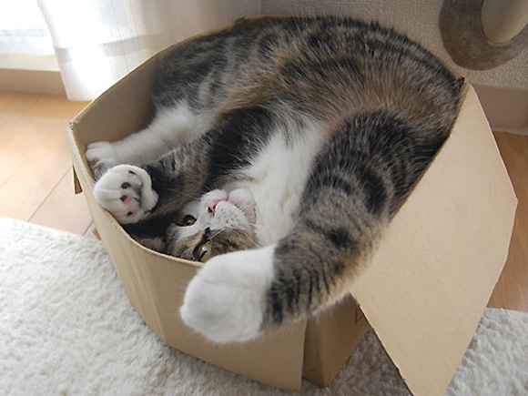
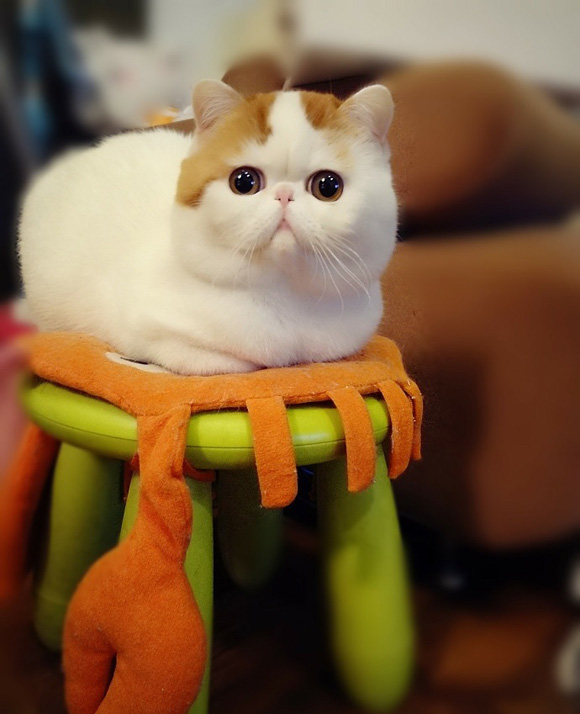
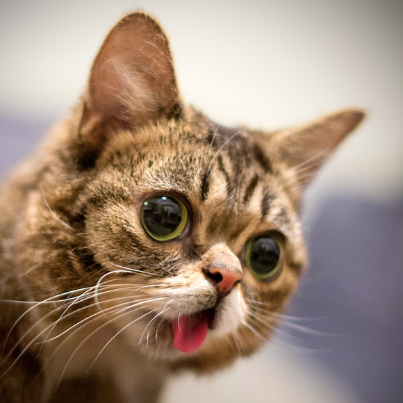

The domestic cat (Felis catus or Felis silvestris catus) is a small, usually furry, domesticated, and carnivorous mammal. They are often called a housecat when kept as an indoor pet, or simply a cat when there is no need to distinguish them from other felids and felines. Cats are often valued by humans for companionship, and their ability to hunt vermin and household pests.
Cats are similar in anatomy to the other felids, with strong, flexible bodies, quick reflexes, sharp retractable claws, and teeth adapted to killing small prey. Cat senses fit a crepuscular and predatory ecological niche. Cats can hear sounds too faint or too high in frequency for human ears, such as those made by mice and other small animals. They can see in near darkness. Like most other mammals, cats have poorer color vision and a better sense of smell than humans.
Information retrieved from: http://en.wikipedia.org/wiki/Cat
Image retrieved from: http://i.huffpost.com/gen/964776/thumbs/o-CATS-KILL-BILLIONS-facebook.jpg
Popular Cats

Maru
Maru (まる, Japanese: circle or round; born May 24, 2007) is a male Scottish Fold. He has been amusing fans with his YouTube antics for years. As of April 2013, videos with Maru have been viewed over 200 million times. From sliding into paper boxes to hiding in dustbins, Maru has done it all.

Grumpy Cat
Grumpy Cat (born April 4, 2012), real name Tardar Sauce, is a female cat and Internet celebrity known for her grumpy facial expression. Her owner Tabatha Bundesen says that her permanently grumpy-looking face is due to feline dwarfism. She shot to Internet stardom in 2013 after her picture was uploaded her on Reddit.

Snoopy the Cat
Snoopy the Cat (大肥猫宝儿) is one of the most popular cats in the world especially in China. She is an Exotic Shorthair cat with a lovely master that takes pictures of her everyday. As you can see, she is a very chubby and huggable. She has a pair of really really big eyes.

Lil Bub
Lil Bub (born June 21, 2011) is an American cat and Internet celebrity known for her “perma-kitten” appearance. Her photos were first posted to Tumblr then took off after being featured on the social news website reddit. She was born with several genetic mutations which accounts for her tongue permanently sticking out. She was also diagnosed with a rare bone disorder, osteopetrosis. Her cute appearance even caused a fan to remark that “Lil Bub is an angel sent down by Heaven”.
Information and images retrieved from: http://www.cutestpaw.com/articles/10-most-famous-internet-cats-in-the-world/